The Plating Generator comes with a set of modifiers that add panelling effects and greebles on top of the base mesh, also in a non-destructive way.
These are completely separate to the other Plating Generator workflows.
They require a grid shaped UV Map to work.
The modifiers use, but do not require knowledge of, Geometry Nodes. However by learning a little Geometry Nodes you will get the most out of them.
Tip
Advantages
Fast: As the modifiers use Blender’s core processes, they are a lot faster than the standard Python add-on functions. They will also work on meshes with larger numbers of faces.
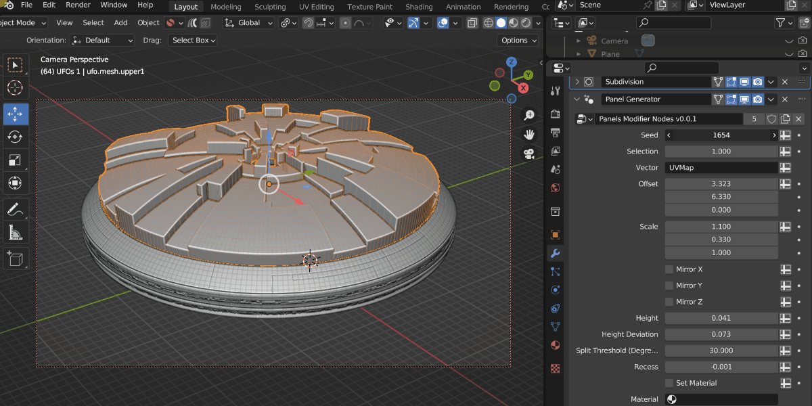
Captured in realtime, the modifier can out perform standard python.
Flexible: As they are modifiers that use Geometry Nodes, you can use them with Blender’s other modifiers or use them as a node with other Geometry Nodes.
Non-destructive: The modifiers do not alter the base mesh and will update automatically when the base mesh changes.
Animatable: The parameters of the modifiers can be animated using keyframes.
Disadvantages
UV Map Required: The panel modifiers specifically require a grid shaped UV Map for them to work, otherwise nothing will be displayed. You can use the UV Squares add-on to achieve this or by using the Follow Active Quads method. Remember, you can add more than one UV Map to an object in Blender’s Object Data Properties tab if you already have a UV Map you wish to keep.
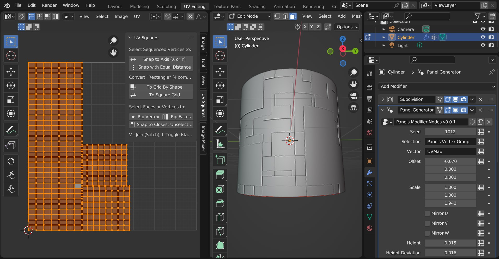
The ideal UV Map is made up of a square grid for the pattern to work well. Here, the UV Squares add-on is used to make the UV faces square.
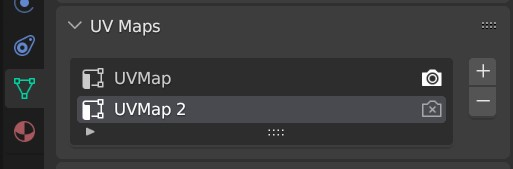
Remember you can create more than one UV map under the Object Data Properties tab.
Quad topology ideal: Ideally the geometry should be arranged in quad topology.
Limited features: As Geometry nodes is still evolving, the modifier parameters are comparatively limited compared to the other Plating Generator workflows.
Selecting the object you wish to add one of the modifiers to. The object requires a square shaped UV map and a set of faces to extrude.
Tip
You could use a Subdivision Surface modifier (optionally set to Simple) to increase geometry for the modifier.
You can use selections of faces with the modifier, but it is recommended to separate geometry for different effects.
Right-click in the viewport and go to the Plating Generator section of the context menu. There should be a Modifiers section that lists all current Plating Generator modifiers:
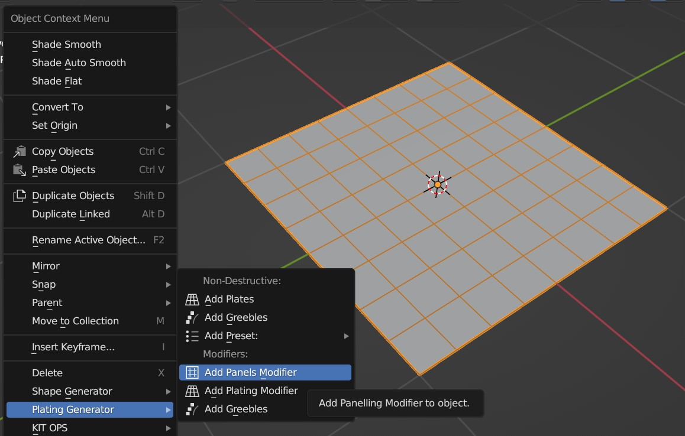
Select the modifier you wish to add from the Modifiers section of the menu.
The modifier will be added to the object, along with any additional modifiers (e.g. a bevel modifier) that complements the effect. You may wish to adjust parameters like the heights of the panels to make sure the effect is working.
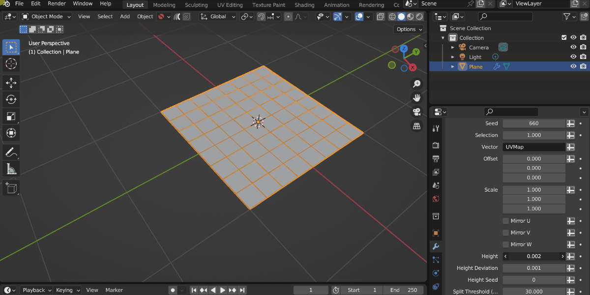
Warning
If the effect is blank, check you have a UV Map for the object.
Tip
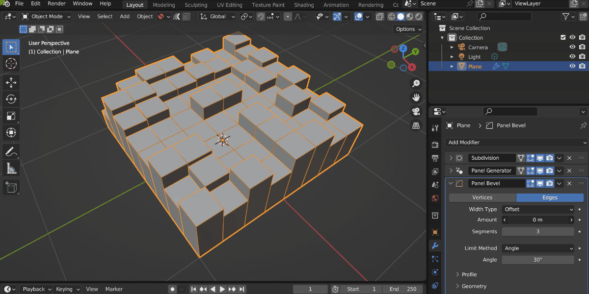
A Bevel modifier might be added to highlight the Panelling effect. You can adjust this separately to the main modifier.
A more customizable version of the panelling modifier, allowing you to set materials and heights for different size panels. Optional notches are added to the sides for greater detail.
A modifier that adds random objects to the surface. A default collection of objects is imported, which can be changed to a different collection on the modifier settings.
A modifier that creates a simple random piping pattern.
Tip
Combining modifiers
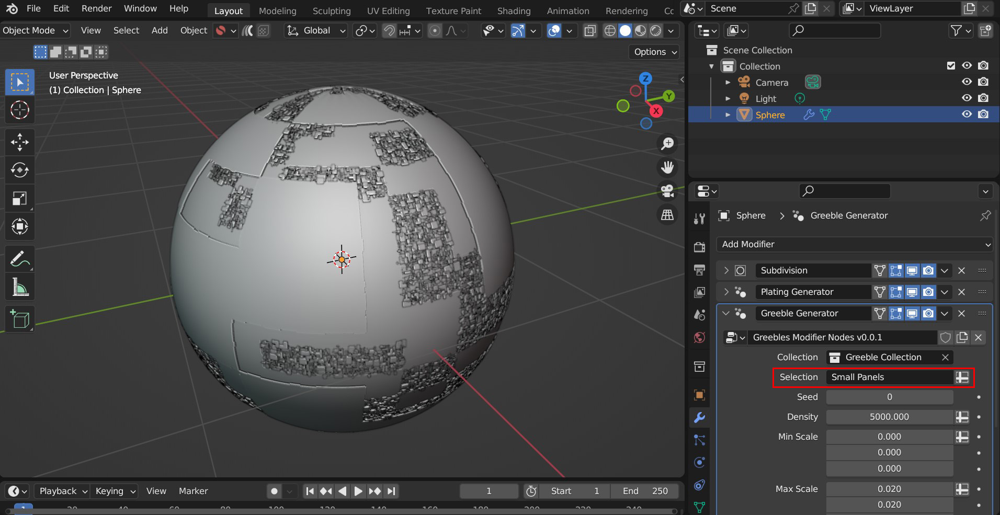
You can combine different modifiers together and use Attributes set by the modifiers to change where they are applied. Here a Plating Modifier has been added first, and then a Greeble Modifier has then been added. The Selection parameter has then been changed so the greebles only appear on the Small Panels.
This is by using the Small Panels attribute that has been set by the Plating modifier:
Hidden behind each modifier is a set of node groups that can be used inside a Geometry Nodes set up. These node groups can be loaded into a Blender scene and then used in combination with any other nodes.
To add the nodes for use:
Go to the Geometry Nodes editing tab.
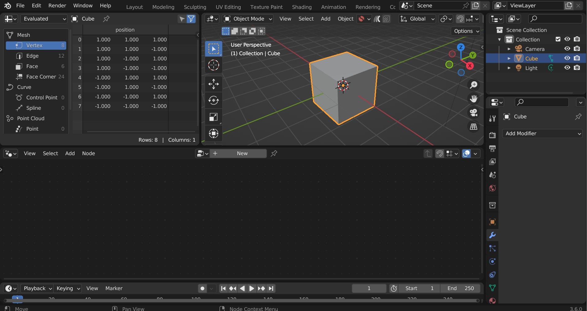
Add a Geometry Nodes modifier to the object if there is not one already.
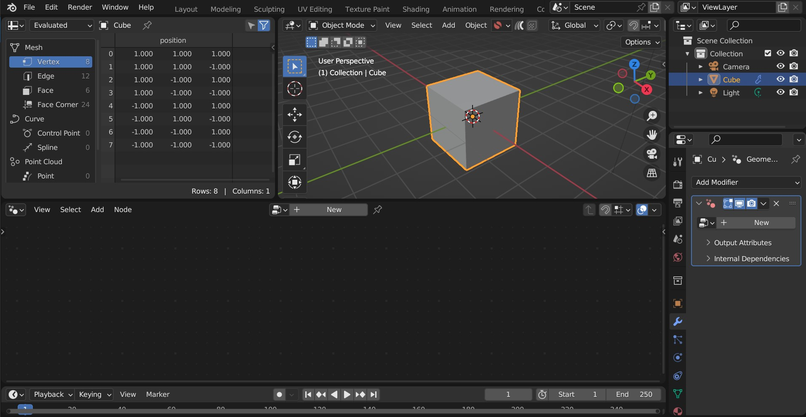
Click “New” to add a new Geometry Nodes tree to the modifier.
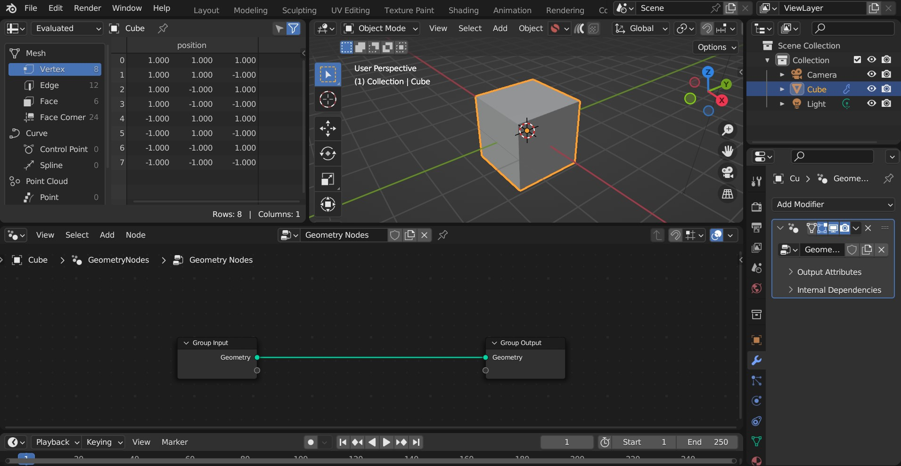
In the nodes editor view, right-click and select “Import Plating Generator Geometry Node Groups”. This will import all node groups if they have not been added already.
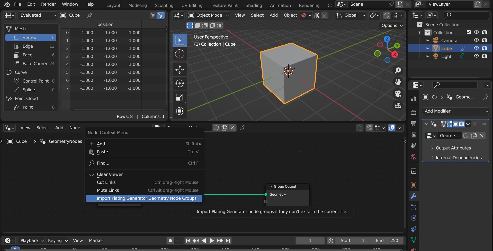
In the nodes editor view, press shift-A and search for one of the following modifier nodes:
Panels Modifier Nodes
Plating Modifier Nodes
Greebles Modifier Nodes
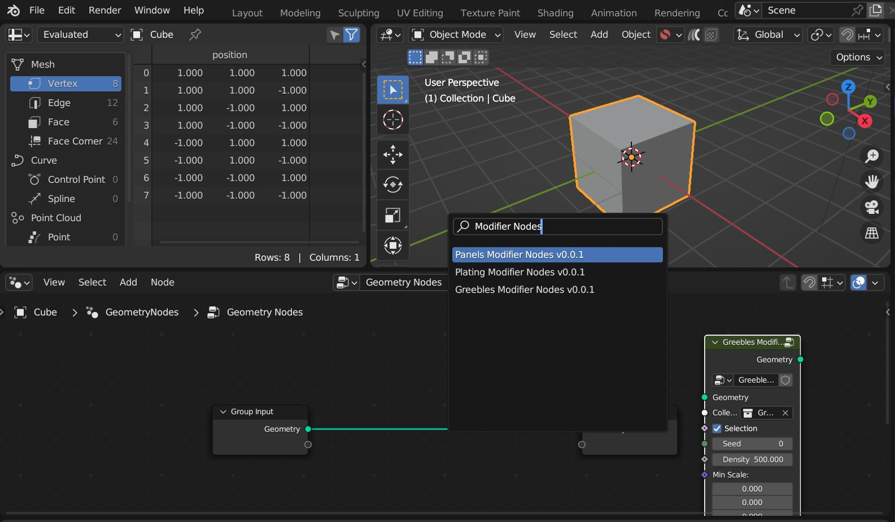
…Any other nodes groups with similar names may be sub-node groups and are less useful.
You can then use the node in the same way as the modifier:
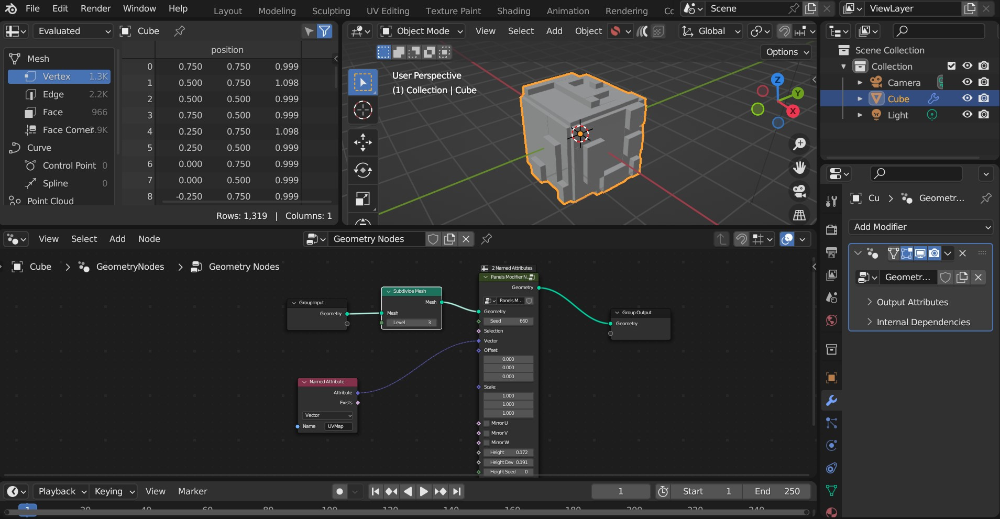
Tip
Remember to add a UV Map (e.g. from a Named Attribute node - see screenshot) to the Vector input to supply a UV Map to the node. Otherwise, nothing will be displayed.
Also make sure the mesh has enough face subdivisions to see a result (as seen in the screenshot)
Adjust parameters (e.g. height) on the node to check it is working.